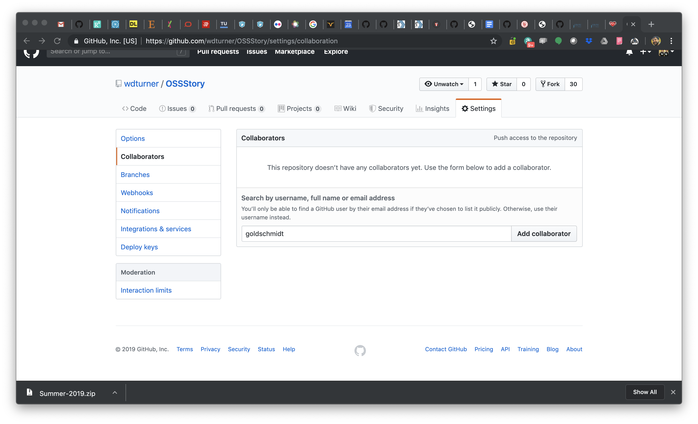
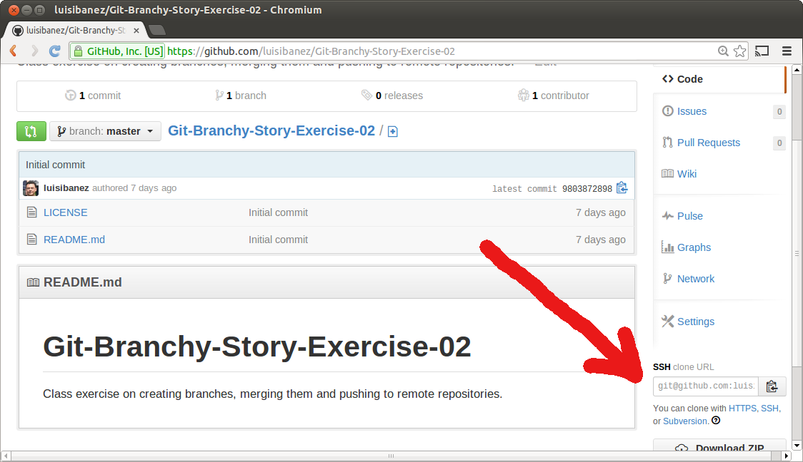
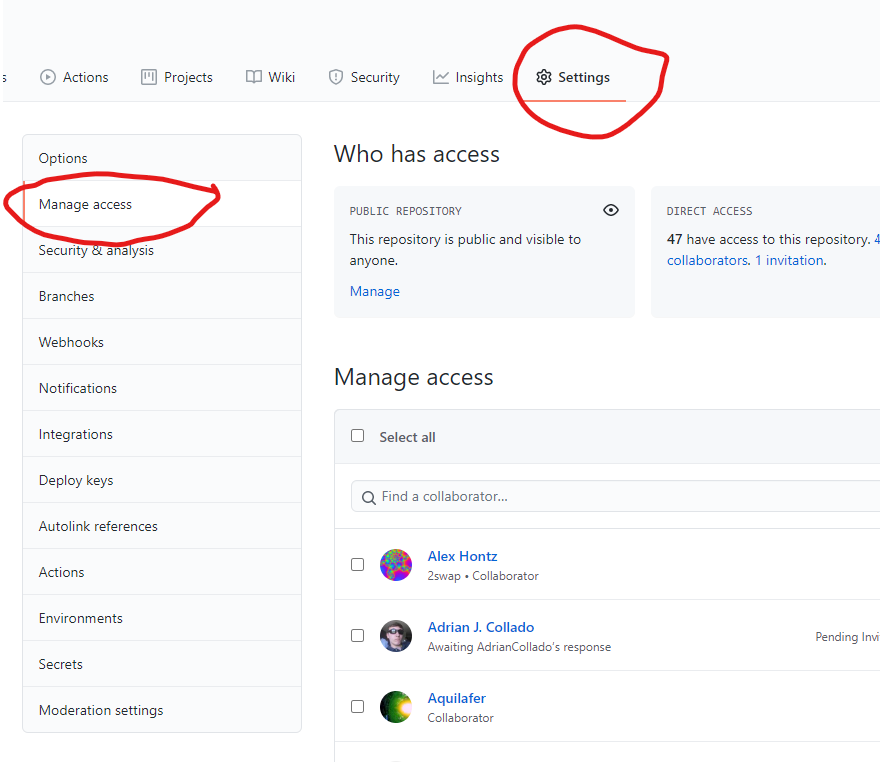

Git
Introduction
Part II
Created by Luis Ibanez / @luisibanez, modifed by Moorthy /@mskmoorthy and Wesley Turner / @wdturner

Git Introduction by Luis Ibanez, modified by Moorthy and Wes Turner is licensed under a Creative Commons Attribution 3.0 Unported License.
Reading Material

Pro Git
by Scott Chacon and Ben Straub
Chapters 3.6 and 5.1
Complete First
Git-Introduction-Part-I Exercises
Clone Repository
git clone git@github.com:wdturner/OSSStory.git
- github username = "wdturner"
- repository name = "OSSStory"
Go Inside the Directory
cd OSSStory
See the remote repositories
git remote -v
- "-v" is for "verbose"
At this point we have a
Shared Repository

Courtesy of git-scm Book.
We can allow unfettered access by adding collaborators . . .
This configuration
is used for a
Centralized Workflow
Git enables
other configurations...
to support
other workflows...
For example
Integration Manager Workflow

Courtesy of git-scm Book.
Let's create a workflow!
You already have
local private
repositories
Let's create
your public
repositories
We do this
by forking
in Github
Fork the Repository

Copy the Fork Address
Now go to your
local private
repository
Add the Remote repository as the new orgin
git remote set-url origin "your clone address"
- origin = local name for remote repository
- This is where you will do your personal work
See the remote repositories
git remote -v
Your Turn !
Add Remote
Repositories
Work with your Team
- Ask team members for their fork address
- Add their address as a remote
- Name the remotes after their first names
Use HTTPS
For the address of your team mates
- Use: https://github.com/aaronsw/...
- Instead of: git@github.com:aaronsw/...
Now choose one of your table to host the Centralized Repository
git remote add upstream "address of centralized repository"
- upstream will be the centralized repository
- owner of the upstream will need to add everyone else as a collaborator
Add Collaborators
What does our workflow look like?
Now let's create
a team directory
to work together
One Team Member
Creates a Branch
git branch Table<i>
git checkout Table<i>
cd <Current Semester>
mkdir Table<i>
cd Table<i>
nano table<i>.Md #Or your editor of choice
cd ..
One Team Member
Commits Team Directory
git add table<i>.Md
git commit -m "Started team directory"
merges to master and pushes it to upstream
git checkout master
git merge Table<i>
git push upstream master
Your push may fail...
with a message like this
! [rejected] master -> master (non-fast-forward)
error: failed to push some refs to 'git@github.com:wdturner/OSSStory.git'
hint: Updates were rejected because a pushed branch tip is behind its remote
hint: counterpart. Check out this branch and merge the remote changes
hint: (e.g. 'git pull') before pushing again.
hint: See the 'Note about fast-forwards' in 'git push --help' for details.
Your push may fail...
with a message like rejected
This just means
than someone else
pushed before you
so now
you have to update
your local repository
Update With the Command
git pull upstream master
and then try the Command again
git push upstream master
You may have
to do it
multiple times
All Team Members
Update their local table .Md
git pull upstream master
git push origin master
All Team Members
Look at recent commits
git log
Note That
The log tells you:
- Who did it
- When it was done
All Team Members
Look at recent commits
Using short format
git log --oneline
Note That
Every commit
is identified by a hash
such as:
5d7d137a3592fe402a4bc282375c2d8bb878326c
You can use
the first characters
to refer
to this commit
You can use
"git show"
git show 5d7d137
to find out more
about this commit
See commit details
git show 5d7d137
Each Team Member
- Picks a "character" name
- Goes into the team directory
- Creates a file with that name
- and extension ".md"
Each Team Member
- Inside the file write one sentence
- Describing the state of the character
Each Team Member
- Git add the file
- Git commit
- Git push to upstream
Your push may fail...
with a message like this
! [rejected] master -> master (non-fast-forward)
error: failed to push some refs to 'git@github.com:wdturner/OSSStory.git'
hint: Updates were rejected because a pushed branch tip is behind its remote
hint: counterpart. Check out this branch and merge the remote changes
hint: (e.g. 'git pull') before pushing again.
hint: See the 'Note about fast-forwards' in 'git push --help' for details.
This just means
than someone else
pushed before you
so now
you have to update
your local repository
Update With the Command
git pull upstream master
and then try the Command again
git push upstream master
You may have
to do it
multiple times
Each Team Member
- Edits the file of her/his character
- Changes the state of the character
Each Team Member
- Git create branch
- Git select branch
- Git add
- Git commit into branch
Use the Commands
git branch MyNewBranch
git checkout MyNewBranch
vim myCharacter.md
git add myCharacter.md
git commit
The commit message
Must explain "how" and "why"
the character changed state
Each Team Member
- Git move to master branch
- Git update master from upstream
- Git merge branch into master
- Git push master to upstream
Use the Commands
git checkout master
git pull upstream master
git merge --no-ff MyNewBranch
git push upstream master
Repeat the push until it succeds
git pull upstream master
git push upstream master
# When you're done, end by updating your personal repository
git push origin master
Finally, one person at the table
- Do a Pull Request to wdturner/OSSStory

This shows 2 Workflows
- Your table is a "Collective Workflow"
- The Pull Request back to the wdturner repository is a "Blessed Repository"